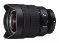
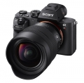

器材库 > 35mm画幅AF变焦镜头 > FE 12-24/4 G

详细规格
镜头类型
超广角变焦镜头
发布日期
2017-05-18
厂家推荐价格
12,500.00 （人民币）
焦距
12mm-24mm
最大光圈
f/4
最小光圈
f/22
视角（对角）
122° - 84°
镜头结构
17片/13组
非球面镜片
4片
低/超低色散镜片
4片
光圈叶片
7片
最近对焦距离
28cm
最大放大倍率
0.14倍
驱动马达
DDSSM
镜头卡口
Sony E
防抖
否
颜色
黑色
尺寸
87×117.4mm
重量
565g
备注
防尘防潮设计
wanjiash2018-01-17 15:334.58 分
操作性 5.00耐用性 4.00性价比 4.00解像力 5.00色彩还原 5.00机械结构 4.50
产品图 / 样片
FE 12-24/4 G

FE 12-24/4 G
评测 / 相关文章
- 详细内容 （存档）
- 真·微单·超广镜头 索尼FE12-24mmF4 G体验 （存档）
- ［影像］索尼FE 12-24/4G，用一种很不一样的方式扫街 （存档）
- ［试用］索尼FE 12-24mm F4 G样张 （存档）
- ［资讯］索尼12-24G是理想的建筑摄影镜头 （存档）
- ［资讯］外媒公布FE12-24/4 G的MTF成绩 （存档）
- ［行情］索尼超广角新员特价 （存档）
- ［资讯］索尼FE 12-24mm F4 G镜头图赏 （存档）
- ［资讯］索尼全画幅镜头群未来将更强大 （存档）
- ［资讯］索尼两款新广变体积大对比 （存档）